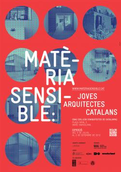
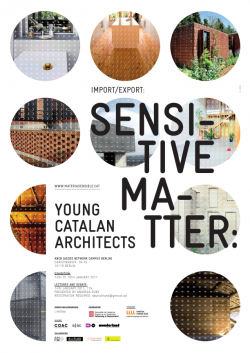
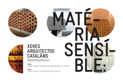

Itinerancias
Llistat de llocs on s'ha exposat Matèria Sensible
| Título | ||
|---|---|---|
|
Col·legi d'Arquitectes de Catalunya (Barcelona) Exposició:
Inauguració i festa: Dijous 5 de juliol a les 19:30. Sala d'exposicions del COAC Festa d'... |
 | |
|
ANCB (AEDES NETWORK CAMPUS BERLIN) Berlin Exposición: Conferencias y debates: 17.00 – 17.30h: Recepción por Hans-Jürgen Commerell, Director de AEDES y Martí Estruch Axmacher, Delegado de la Delegación de la Generalitat de Cataluña en Alemania.... |
 | |
|
ETSAC (Escuela Técnica Superior de Arquitectura de A Coruña). A Coruña. España Exposición: ... |
 | |
|
Galeria NOGO. Lisboa (Portugal) Conferencias: Viernes y sábado, de 18:00 a 19:00
Exposición: del 18 al 25 de junio, de 17:00 a 20:00 |
 |